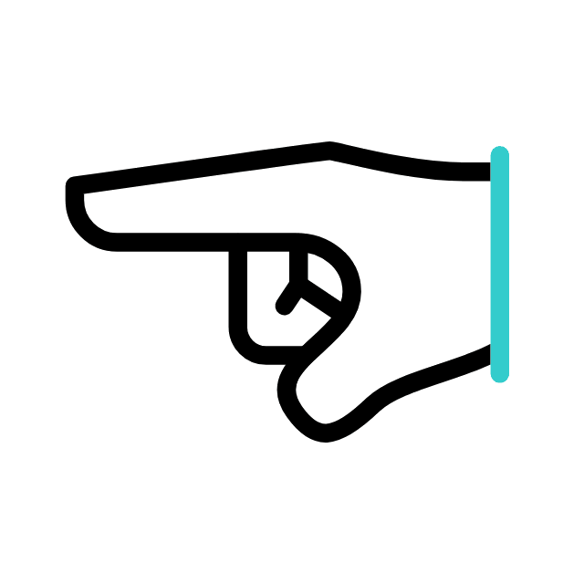

Stack is Empty.

Understanding the Stack Data Structure
A comprehensive overview of stacks, their operations, and real-world applications.
What is a Stack?
A stack is a linear data structure that follows the Last-In-First-Out (LIFO) principle. Elements are added and removed from the top of the stack.
Stack Operations
- Push: Adds an element to the top of the stack.
- Pop: Removes the top element from the stack.
- Peek: Returns the top element without removing it.
- isEmpty: Checks if the stack is empty.
- isFull: Checks if the stack is full (in case of a bounded stack).
Examples of Stack in Action
Some common examples of stack usage:
- Undo functionality in text editors.
- Backtracking in maze solving algorithms.
- Function call stack in programming.
Real-World Applications
Stacks are widely used in various computing contexts:
- Browser history navigation.
- Expression evaluation and syntax parsing.
- Managing recursive function calls.
Time Complexity of Stack Operations
One reason stacks appear everywhere in computing is that their core operations are extremely cheap. Because everything happens at one end (the top), there is no shifting or searching involved:
| Operation | Time Complexity | Why |
|---|---|---|
| Push | O(1) | The new element goes straight on top |
| Pop | O(1) | Only the top element is removed |
| Peek | O(1) | Reads the top without touching the rest |
| Search | O(n) | You may have to dig through every element |
That O(n) search is the trade-off: a stack is deliberately restricted. You give up random access and get guaranteed constant time at the top in return. If you find yourself needing to reach into the middle of a stack often, that is usually a sign a different structure fits the problem better.
Where the Name "Stack Overflow" Comes From
Every time you call a function, your program pushes a record of that call (its local variables and a return address) onto a special stack called the call stack. When the function returns, its record is popped off. This happens millions of times per second in every program you run, which makes the call stack probably the most heavily used data structure in all of computing.
The call stack has a limited size. If a function keeps calling itself with no way to stop (runaway recursion), records pile up until the stack runs out of room, and the program crashes with the famous stack overflow error. The world's biggest programming Q&A website chose its name from exactly this error. So when you push too many items onto the visualizer above, you are recreating, in miniature, one of the most well known failure modes in software.
A Classic Interview Problem: Balanced Brackets
One of the most common interview questions answered with a stack: given a string like {[()]}, check whether every opening bracket has a matching closing bracket in the right order. The stack solution is elegant:
- Scan the string one character at a time.
- When you see an opening bracket ( { [ push it onto the stack.
- When you see a closing bracket, pop the stack. If the popped bracket does not pair with it, or the stack was empty, the string is unbalanced.
- At the end, the string is balanced only if the stack is empty.
This same idea is how code editors match your parentheses, how compilers catch a missing brace, and how HTML validators detect an unclosed tag. It works because bracket nesting is naturally last opened, first closed, which is exactly LIFO.
Stack vs Queue: Which One Do You Need?
Stacks are often taught alongside queues, and choosing between them comes down to one question: should the newest item or the oldest item be handled first?
| Stack | Queue | |
|---|---|---|
| Order | Last in, first out (LIFO) | First in, first out (FIFO) |
| Ends used | One end (the top) | Both ends (rear in, front out) |
| Everyday picture | A pile of plates | A line at a ticket counter |
| Typical uses | Undo, call stack, backtracking | Print jobs, task scheduling, breadth first search |
Frequently Asked Questions
What happens when a stack is full?
A fixed-size (bounded) stack rejects the push, a condition called stack overflow. Dynamic stacks built on resizable arrays or linked lists simply grow, limited only by available memory. The visualizer above behaves like a dynamic stack.
Why use a stack when arrays can do everything a stack does?
Because the restriction is the feature. By allowing changes only at the top, a stack makes an entire class of bugs impossible and communicates intent to anyone reading the code. When you see a stack, you instantly know the access pattern is last in, first out.
Is the undo feature in editors really a stack?
Yes. Each action you take is pushed onto an undo stack, and pressing Ctrl+Z pops the most recent one. Most editors pair it with a second redo stack: whatever undo pops gets pushed there, which is why doing something new usually clears the redo history.
How is the stack in this visualizer implemented?
In plain JavaScript, using an array whose push and pop methods map directly to the stack operations you click. The full source code is public, and the code panel below shows equivalent implementations in C, C++, Java, Python and JavaScript that you can copy and run.
Stack Code Implementation
Want to Learn More?
Explore our comprehensive guides covering stack operations, implementations in 5 languages, the call stack, monotonic stacks, and interview problems.